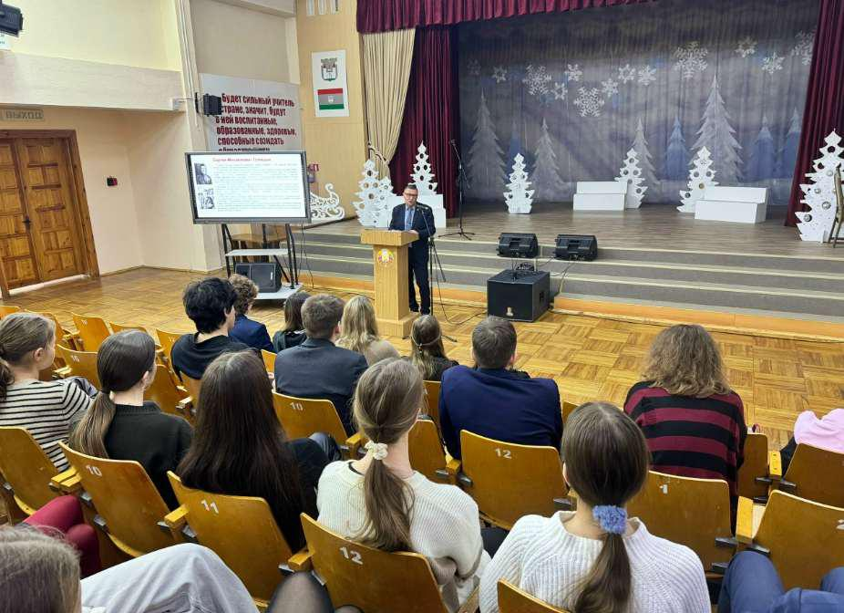

НЕТ НИЧЕГО ВАЖНЕЕ ЖИЗНИ ЧЕЛОВЕЧЕСКОЙ ЖИЗНИ
14 января в Государственном учреждении образования «Гимназия №1 г. Борисова» прошел важный и трогательный урок памяти, посвященный одной из самых страшных страниц нашей истории – трагедии в деревне Ола.
14 января – день, когда время словно останавливается в немом крике. В 1944 году здесь за одно утро оборвались жизни 1758 человек, из которых 950 были детьми. Ола стала «двенадцатью Хатынями», символом нечеловеческой жестокости и невероятной стойкости нашего народа.

В ходе урока учащиеся узнали исторические факты о карательной операции фашистов, посмотрели архивные кадры и видеоматериалы о мемориальном комплексе, возведенном на месте сожжённой деревни, почтили минутой молчания память всех безвинных жертв Великой Отечественной войны.
Особое внимание было уделено словам Президента Республики Беларусь «…Нет никаких оправданий политике геноцида, нет ничего важнее жизни человеческой».
Такие уроки – это не просто изучение прошлого. Это наш долг перед погибшими и напоминание живым о том, как хрупок мир.